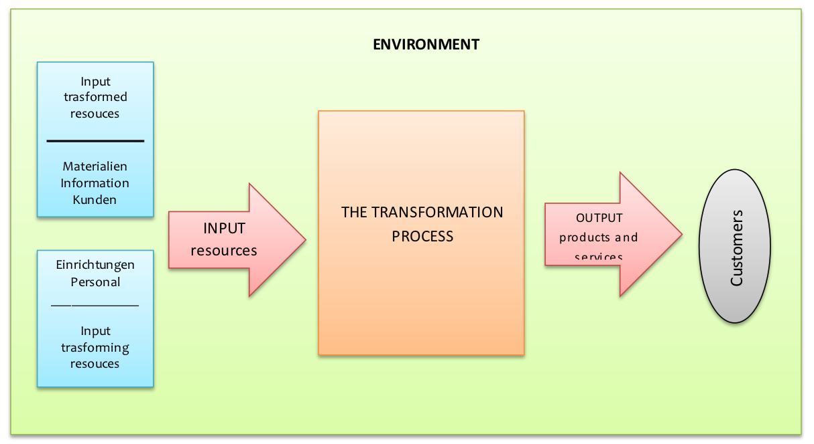
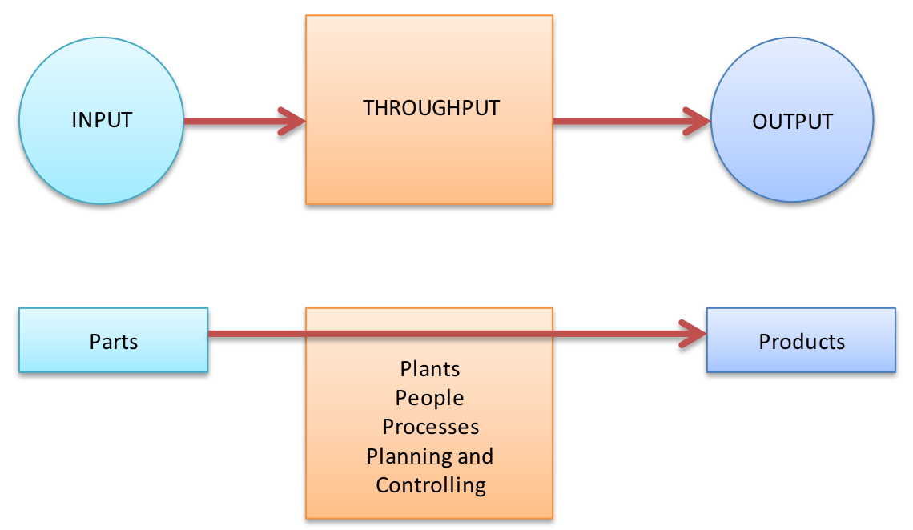
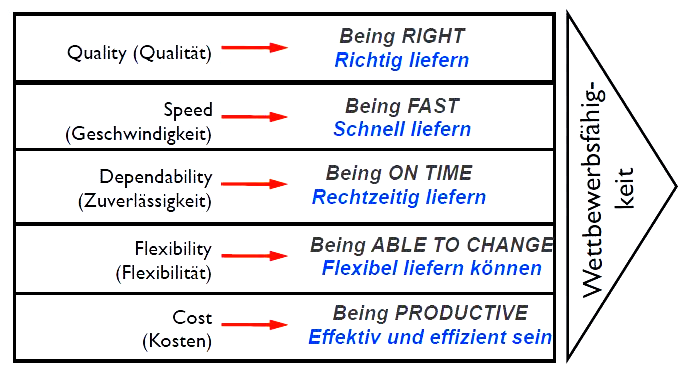
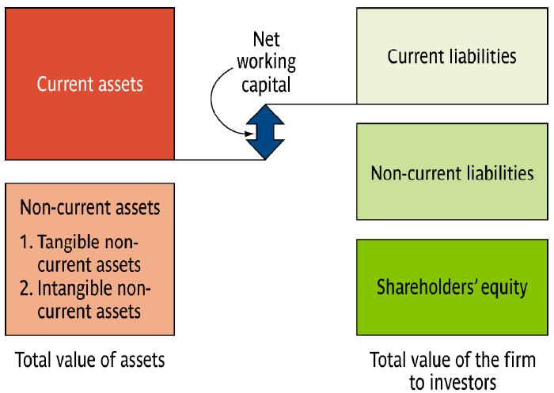
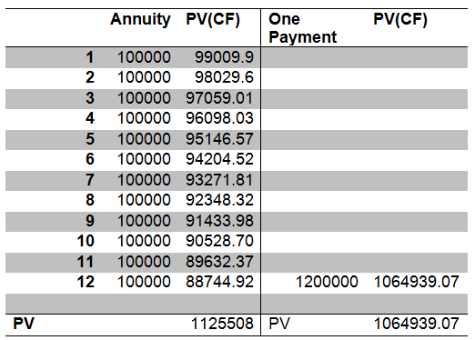

Definitionen ziemlich direkt auswendig lernen.
Net-Present-Value: Zu einfach, um in der Klasur dran zukommen
?
Im Folgenden aufgabenweise die Übungen, zum Bearbeitenden nützliche Informationen und Lösungen.
Sachziel eines Unternehmens ist die Herstellung von Sachgütern und Dienstleistungen. Dieses Sachziel wird in vier Leistungsbereiche segmentiert:
Produktionsprozesse stehen im Produktionsmanagement im Vordergrund. Man kann das Produktionsmanagement als Kombination von Produktionsfaktoren zum Zwecke der Erstellung von Sach- und Dienstleistungen auffassen.
Produktionsmanagement ist wichtig für ein Unternehmen, denn es schafft diverse Vorteile für die Firma:
Alle Prozesse im UN lassen sich als Transformationsprozess nach Input-Transformation-Output-Modell auffassen:

Alle Produktionsprozesse erzeugen Produkte oder/und Dienstleistungen. Oft ist es schwierig Produkte von Dienstleistungen abzugrenzen.
Das I-T-O-Model lässt sich auch auf die Entscheidungsfelder des Produktionsmanagement übertragen:

Diese 5 Entscheidungsfelder des Produktionsmanagement erzielen das Erreichen der Leistungsfähigkeitsgrenze und das Sicherstellen eines schnellen und flüssigen Material- und Informationsflusses.
Alle Produktionsprozesse ähneln sich indem sie für die Umwandlung des Inputs in Outputs sorgen, sie unterscheiden sich aber in manchen Parametern, weil sie unterschiedliche Charakteristika haben.

Investitionsrechnungen sind Methoden, mit denen die erwarteten Konsequenzen von Investitionen in Bezug auf quantifizierbare Interessen beurteilt werden können. Demnach liefern diese Verfahren Entscheidungshilfen bei der Beurteilung konkreter Investitionsvorhaben. Ziel der Investitionsrechnung ist die optimale Nutzung zur Verfügung stehender Geldmittel; die Investitionsrechnung folgt somit dem Prinzip der Gewinnmaximierung.
„Investition“ ist der zentrale Begriff der Investitionsrechnung. Es gibt allerdings keine feste Definition dieses Begriffs. Die gängige Definition ist: Investition ist das Anlegen von Geldmitteln, wobei aus freiem Kapital gebundenes Kapital wird. Man gibt quasi dem Kapital durch Investition eine andere Erscheinungsform. Das Wort „Investition“ kann sowohl eine Handlung (die Tätigkeit des Investierens) als auch ein Objekt (das Ergebnis des Investierens) kennzeichnen. Außerdem kann der Investitionsbegriff wie folgt gegliedert werden:
Gliederung nach Zielsetzung:
Chronologische Gliederung
Wichtig ist es zu betonen, dass Investitionen oft mit mehreren Zielsetzungen verbunden sind.
Ein Lebensmittelgroßhandel erwägt die Anschaffung eines Palettenwicklers. Bisher wurden die Paletten manuell mit Folie umwickelt.
Wenn man jetzt das Investitionsvorhabens einordnen wollen würde, dann würde man zu folgenden Ergebnis kommen:
Es gibt 4 typische investitionsbezogene unternehmerische Entscheidungsprobleme:
Man unterscheidet auch zwischen Brutto- und Nettoinvestitionen Laut Kruschwitz ist Investition eine betriebliche Tätigkeit, die zu unterschiedlichen Zeitpunkten t Aus- und Einzahlungen verursacht, wobei dieser Vorgang immer mit einer Auszahlung beginnt.
Man soll auch zwischen folgenden Investitionsrechnung unterscheiden:
Wichtiger Schritt in der Investitionsrechnung ist der Kalkulationszinssatz. Ohne sein Festlegen kann keine Investitionsrechnung durchgeführt werden. Der Kalkulationszinssatz beschreibt die Mindestverzinsungsanforderung, die an ein Investitionsobjekt gestellt ist. Aufgrund dieses Zinssatzes kann ein Investitionsvorhaben dann mit verschiedenen Verfahren kalkuliert werden.
Bei der Festlegung des Kalkulationszinssatzes ist es wichtig zu berücksichtigen, dass der Kalkulationszinssatz nicht niedriger als der Zinssatz einer möglichen Kapitalmarktanlage sein darf. Außerdem darf er auch nicht niedriger als der Sollzinssatz der Finanzierung sein. Der Kalkulationszinssatz ist eine subjektive Größe, es existieren aber mögliche objektive Untergrenzen (Kapitalmarkt).
In der Praxis werden oft die Aufschläge auf den Kalkulationszinssatz vorgenommen. Diese Aufschläge hängen vom geschätzten Risiko ab - je riskanter die Investition erscheint, desto höher der zugrunde gelegte Kalkulationszinssatz. Dieses Verfahren ist üblich, weil die Investitionsrechnung meist auf Prognosen der erwarteten Zahlungen basiert. Der Eintritt dieser Prognose ist mehr oder weniger unsicher.
Die Kostenvergleichsrechnung vergleicht die durchschnittlich anfallenden Jahreskosten von verschiedenen Investitionsobjekten. Sie nimmt keine Rücksicht auf die Ertragsseite oder die Kapazität der Anlagen, deswegen kann man mit der Kostenvergleichsrechnung nur Investitionsobjekte gleicher Kapazität vergleichen.
Die Kostenvergleichsrechnung hat 2 Anwendungsfälle:
Die Investition mit den geringsten durchschnittlichen Kosten pro Periode wird gewählt.
Bei dem Begriff „Kosten“ unterscheidet man zwischen Kapital- und Betriebskosten. Kapitalkosten sind die kalkulatorische Abschreibungen und die kalkulatorische Zinsen. Zu den Betriebskosten gehören Personalkosten, Fertigungsmaterialkosten, Energiekosten, Raumkosten etc.
Die Ingenieurformel setzt sich aus AfA- und Zinskosten-Formeln zusammen. Diese Formel berechnet einen durchschnittlichen Kapitaldienst pro Periode:
$\frac{A - R}{n} + \frac{A + R}{2} \cdot i$
Kalkulatorische Abschreibung berechnet man mit der Formel:
$AfA = \frac{A}{n}, R = 0$
bzw.
$AfA = \frac{A - R}{n}, R \neq 0$
Für die Berechnung der durchschnittlichen Zinskosten pro Periode benötigt man:
Das durchschnittlich gebundene Kapital, $DGK = \frac{A + R}{2}$
Den Kalkulationssatz i
Demnach ist die Formel für die Berechnung der Zinskosten pro Periode:
$DGK \cdot i = \frac{A + R}{2} \cdot i$
Um die Aussagen über die Vorteilhaftigkeit der Alternative machen zu können, berechnet man die Summe aus den Kapital- und Betriebskosten für jede Alternative. Die Alternative mit kleineren Summen ist vorzuziehen.
$BA + KA < B_B + K _B$
Durch den Ersatz einer Altanlage fallen die Betriebskosten der Alten Anlage weg - die Kapitalkosten jedoch fallen weiter an.
Die Altanlage ist zu ersetzen, wenn die gesamten Kosten der Neuanlage geringer sind als die Betriebskosten der Altanlage.
$Bneu + Kneu + Kalt < Balt + K_alt$
also
$Bneu + Kneu < B_alt$
Bei dieser Berechnung stellt sich die Frage: Wann lohn sich der Übergang zu einem anderen Verfahren mit höheren Fixkosten, aber geringeren variablen Kosten?
Um die kritische Menge zu berechnen, benötigen wir die Kostenfunktionen der beiden Alternativen.
Die kritische Menge wird durch Gleichsetzung der Kostenfunktionen berechnet.
Formel?
Wann ist eine rein statische Betrachtungsweise noch vertretbar?
Die Vorteilhaftigkeit einer Investition wird geprüft, indem alle mit der Investition verbundenen Ein- und Auszahlungen auf den Beginn der Laufzeit abgezinst werden, um sie ihrer Gesamtheit miteinander zu vergleichen. Ein sinnvoller kalkulatorischer Zinssatz wird hier dringend benötigt.
Ein Geldbetrag $K_0$ wird zum Zinssatz $i$ für $n$ Jahre angelegt. Zinsen werden dem angelegten Kapital zum Ende jeder Periode zugeschlagen.
$Kn = K0 (1 + i)^n$ , wobei $(1 + i)^n$ ein Aufzinsfaktor ist.
Wenn gilt $Kn = K0(1 + i)^n$,
dann gilt auch $K0 = Kn(1 + i)^{-n}$ oder $K0 = \frac{Kn}{(1 - i)^n}$; wobei $K_n (1 + i)^{-n} der Abzinsungsfaktor ist.
Rente ist eine Folge der gleichen Einzahlungen. Man kann sowohl den Gegenwartswert (Barwert) und den Endwert einer Rente berechnen.
$K_n = e \cdot \frac{(1 + i)^n - 1}{i}$
Wobei $\frac{(1 + i)^n - 1}{i}$ ein EWF ist
Barwert
$K_0 = e \cdot \frac{(1 + i) ^n - 1}{i \cdot (1 + i)^n}$
Wobei $\frac{(1 + i) ^n - 1}{i \cdot (1 + i)^n}$ BWF oder DSF ist.
a) Was sind die grundlegenden Aufgaben der Materialwirtschaft/Beschaffung? (2 Punkte) b) Was ist das Ziel der Materialwirtschaft? Gehen Sie bitte dabei auf die drei wesentlichen Komponenten ein! (3 Punkte)
Die Asterix Computer GmbH kauft pro Jahr 8.000 Prozessoren als Komponenten für Computer ein. Jeder Prozessor kostet € 10. Für die Lagerhaltung fallen pro Jahr € 3 pro Prozessor an. Eine Bestellung verursacht Kosten in Höhe von € 30. Das Unternehmen produziert an 200 Tagen im Jahr. a) Geben Sie zuerst die Formel für die Gesamtkosten der Beschaffung mit ihren Einzelbestandteilen an! (2 Punkte) b) Leiten Sie daraus die Formel für die Optimale Bestellmenge ab und berechnen Sie diese! (2Punkte) c) Wie viele Bestellungen werden damit pro Jahr vorgenommen und nach wie vielen Arbeitstagen wird wieder eine Bestellung vorgenommen? (2 Punkte) d) Nennen Sie vier Voraussetzung, die für die Anwendung der Formel zur Optimalen Bestellmenge erfüllt sein müssen! (4 Punkte)
Ein Motorradhersteller benötigt pro Jahr 90.000 Reifen zu einem Preis von 20 Euro pro Stück. Pro Bestellvorgang beim Reifenlieferanten fallen fixe Kosten von 100 Euro an. Als Lagerkostensatz werden 7% und als Zinskostensatz 3% pro Jahr auf den durchschnittlich gebundenen Wert angenommen. a) Geben Sie zuerst die Formel für die Gesamtkosten der Beschaffung mit ihren Einzelbestandteilen an! (2 Punkte) b) Berechnen Sie auf Grundlage dieser Gesamtkostenformel, wie hoch die optimale Bestellmenge ist, wie hoch die Gesamtkosten sind und wie viele Bestellungen das Unternehmen pro Jahr durchführen sollte. (6 Punkte)
a) K = Bp + KfBm^-1 + (m/2)p*q
b) K' = Bp + KfB/m + (m/2)pq dm K' = 0 - KfB/m^2 + pq/2 = 0 -> Umformen: | -pq/2 | *(-1) | *m2 |2/pq | wurzelziehen -> Wurzel aus 2KfB/pq = mopt -> Einsetzen der Werte in mopt -> mopt = Wurzel aus 210090.000/200,1 = 3.000 (optimale Bestellmenge) -> Gesamtkosten K = 90.00020 + 10090.000/3000 + 3000/2200,1 = 1.806.000 -> Bestellungen pro Jahr B/mopt = 90.000/3.000 = 30
a) Erläutern Sie, was eine ABC-Analyse ist. (2 Punkte) b) Welche Formen der Materialbedarfsermittlung gibt es und für welches Gut sind sie geeignet (A, B oder C-Gut)? (2 Punkte)
a) Beschreiben Sie die Ziele des Just-in-Time Konzeptes (2 Punkte). b) Welche Anforderungen bedarf das Just-in-Time Konzept? (2 Punkte) c) Nennen Sie zwei Probleme/Risiken einer Just-in-Time-Anlieferung. (2 Punkte)
What are the three main types of decision a financial manager can make? For each decision, give a relevant example.
Joint Venture between Chrysler and Fiat:
Evaluate the following statement: "Managers should not focus on the current share price because doing so will lead to an overemphasis on short-term profits at the expense of long-term profits."
Many companies view a stock market listing as an important objective.
a) Why do you think this is the case? b) Why do you think Google listed on a stock exchange?
a)
b)
The 2007 annual report for Anglo American plc, the world's leading global mining company, shows that the firm had € 34.042 billion in non-current assets and €9.962 billion in current assets. It reported € 11.480 billion in current liabilities and € 8.665 billion in non-current liabilities. How much has the equity of Anglo American plc worth?

"Eine Bilanz zeigt auf der rechten Seite das Kapital, das einem Unternehmen zur Verfügung steht (Passiva). Auf der linken Seite zeigt sie, in welcher Form dieses Kapital im Unternehmen vorhanden ist (Vermögenswerte, Aktiva). Die Summe der linken Seite muss daher stets den gleichen Wert wie die Summe der rechten Seite ergeben." - Wikipedia, Bilanzsumme
"[...] equity is the residual claim or interest of the most junior class of investors in assets, after all liabilities are paid." - Wikipedia, equity
$Equity = Total\ Assets - Total\ Liabilities$
$Equity = (9.662 + 34.0442) - (11.480 + 8.665) = 23.859\ billion$
Anlgo American plc announces that it plans to increase its non-current assets by € 10 billion. If the company whishes to maintain its ratio of total liabilites to equity, how much long-term debt should it use?
Step 1: Determine the current liability/equity ratio:
$\frac{Liability}{Equity} = \frac{20.145}{23.856} = 0.844$
Step 2: To find the current weightings of debt and equity in the new funding, you must actually calculate a new ratio, liability/assets:
Liability/total assets = 20.145/44.004 = 0,457799
Step 3:
The debt raised is thus 4.5779 billion and equity is 5.4200 billion = 10 billion
Step 4: Check the new liabilty/equity ratio
new level of liabilites = 24.7229 billion
new level of equity = € 29.2810 biollion
Step 5: Verification
The new ratio is: € 24.7229 billion/29.2810 billion = 0,844 - the same as before
Your company has just purchased a forklift truck, and has two payment options:
(a) pay 10,00 Swedish kroner every meonth for 12 months (b) pay 1.200.000 swedish kroner at the end of the year
Which option would you choose? Why?

The payment of SEK 1,200.000 in 12 months is less because the cash flow is after the mayority of SEK 100,000 monthly payments (Assume the monthly interes rate is 1 percent)
ProjectA Has
ProjectB Has
Which project should you choose? Why?
ZWEIFELHAFT, da Projekte in der Zukunft liegen.
You would choose the less risky project because both have the same expected value. In this case you would choose projectA because the risk of losing and gaining money is less that in project b.
You suddenly own a company that is losing € 100.000 per week. At the rate things are going the company won't have any cash left in six months to pay creditors.
What are your goals as a financial manager? Is this consistent with what you habe read in this chapter? Explain!
Goals:
You have the following information for the British mining firm Antofagasta plc. All figures are in € millions.
Give a brief interpretation of what you think Antofagasta plc did over the period 2003-2007. Do you think it is in a better position now than in 2003?
Explain why the corporate governance of a firm sole propietorship should be differend from that for a partnership, which in turn should be different from a limited corporation.
What are the differences between a general partnership and a limited partnership? Why do firms choose to be partnerships instead of limited liability corporations?
Why would we expect managers of a corporation to pursue the objectives of shareholders? What about bondholders?
Would you be willing to pay € 500 today in exchange for € 525 in one year? What would be the key considerations in answering yes or no? Would your answer depend on who is making the promise to repay?
As you increase the length of time involved, what happens to future values? What happens to present values? What happens to the future value of an annuity if you increase the rate r? What happens to the present value?
In the UK, every child born after 1 September 2002 receives a € 250 voucher from the government that they cannot touch until they reach the age of 18. Assume that the growth rate o the funds is 3.5 per cent (this is what the British government suggests):
How much will your child have at the abe of 18?
In 2008, British Airways had a pension liability of € 330 million.
Let's assume it must be paid in 30 years' time.
To assess the value of the firm's shares, financial analysts want to discount this liability back to the present.
If the relevant discount rate is 5.6 per cent, what is the present value of this liability?
On 8 February 2009 John Majeski, chairman of Reading Football Club, sold the Edgar Degas bronze sculpture Petite Danseuse de Quatorze Ans at auction for a world record price of € 13.3 million.
He bought the statue in 2004 for € 5 million. What was his annual rate of return on this sculpture?
You work for a jewellers and have sourced a good goldsmith who is able to sell you 100 ounces of gold for one million rand. You approach your two main customers. Mr Martyn says he will buy the gold from you in six months for R 1,040,000, whereas Ms Kuchner tells you that she will be able to buy the gold from you in two years' time for R1,160,000. What is the annual percentage rate that Mr Martyn and Ms Kuchner are offering you? Which option should you go for?
Nachgereichte Ergebnisse:
0.008 bzw. 8 %
An investor purchasing a British consol is entitled to receive annual payments from the British government for ever. What is the price of a consol that pays € 4 annually if the next payment occurs one year from today? The market interest rate is 3 per cent.
FIFA rules regarding players contracts are very interesting. If a player whishes to break his contract, the pruchasing club must pay the players's club four times the player's annual salary multiplied by the number of years left onb the contract.
The player must pay 10 per cent of this amount personally, and the agent must also pay 10 per cent of the amount from his own pocket.
Consider the footballer Cristiano Ronaldo, who was widely rumored to be leaving Manchester United for Real Madrid during the summer of 2008 (he acutally joined in the summer of 2009).
At the time Ronaldo was earning € 120,000 a week, and had four years of his contract with Manchester United left.
a) Calculate how much Ronaldo would have personally had to pay Manchester United if he left with 4 years remainung, 3 years remaining, 2 years remaining and 1 year remaining! b) If the appropriate annulized discount rate is 8 per cent, what is the present value to Ronaldo of breaking his contract with 4, 3, 2, 1 and 0 years remaining? c) Assume you are Ronaldo's agent and can personally earn € 5 million today from getting Ronaldo to sign a pre-contract agreement to join Real Madrid in the future. d) Calculate the net present value to you if Ronaldo left with 4 years remaining, 3 years remainung, 2 years remaining and 1 year remaining.
What is the future value in four years of € 1,000 invested in an account stated annual interest rate of 10 per cent:
a) Compounded annually? b) Compounded semi-annually? c) Compounded monthly? d) Compounded continuously? e) Why does the future value increase as the compounding period shortens?
FP = PV (1 + r)^T
a) annualy FV = 1000 (1 + 0.1)^4 = 1,464.10 €
b) semi-annually $FV = 1000 (1 + 0.1/2)^(4\cdot2)$
c) monthly $FV = 1000 (1 + 0.1 /12)^(4 \cdot 12)$
d) continuusly
$FV = PV ^(eT)$
a) What is the annualized interest rate, compounded daily, that is equivalent to 12 per cent interest compounded semi-annually? b) What is the daily compounded rate that is equivalent to 12 per cent compounded continuously?
$FV = C (1 + \frac{r}{m})$
a)
$(1 + \frac{r}{365})^{365} = (1 + (0.12/2))^2$
$(1 + \frac{r}{365})^{365} = 1.1236$
$1 + \frac{r}{365} = 1.1236^{\frac{1}{365}}$
$1 + \frac{r}{365} = 1,000319$
$r = 1.000319 \cdot 365$
$r = 11.6556\%$ ($11,6435 \%$ gerundet)
b)
$(1 + \frac{r}{365})^{365} = e^{0.13} = 1.127497$
$(1 + \frac{r}{365}) = 1.12^{\frac{1}{365}}$
$1 + \frac{r}{365} = 1.000329$
$r = 0.00329 + 365$
$r = 12.002 %$
Antwortsatz: "Der Zinsatz, der täglich gezahlt wird und dabei den kontinuierlichen Zinsatz (12%) entspricht müsste bei 12,002 % liegen." - Tutor
Marcus Boruc has been working on a new hands-free telephone that clips into your ear. The new gadget has now been cleared for manufacture and development. Marcus anticipates his first annual cash flow from the phone to be €200,000, received two years from today. Subsequent annual cash flows will grow at 5 per cent in perpetuity. What is the present value of the phone if the discount rate is 10 per cent?
Perpetuity: A constant stream of cash flows that never ends
PV of a growing perpetuitiy: $PV = \frac{C}{r - g}$, where g is the perpetual growth rate
$PV = \frac{C}{r - g}$, however Marc receives two years from today, therefore
$PV = \frac{C}{r - g} \cdot \frac{1}{1 + r}$
$PV = \frac{200.000 €}{0,1 - 0,05} \cdot \frac{1}{1 + 0,1}$
$PV = 3,636,363.64 €$
You receive a credit card application from Shady Banks plc offering an introductory rate of 1.90 per cent per year, compounded monthly for the first six months, increasing thereafter to 16 per cent per year compounded monthly.
Assuming you transfer the €4,000 balance from your existing credit card and make no subsequent payments, how much interest will you owe at the end of the first year?
Here we need to find the FV of lump sum, with a changing interest rate. We must solve this problem in two parts. After the first six months, the balance will be:
$FV = € 4000 \cdot [1 + \frac{.019}{12}]^6 = 4038,15 €$
This is the blance in six months. The FV in another six months will be:
$FV = 4038.15 \cdot [1 + \frac{.16}{12}]^6 = 4372,16 €$
The problem asks for interest accured, so, to find the interest, we substract the beginning balance from the FV. The interest assured is:
$Interest = 4372.16 € - 4000.00 € = 372.16 €$
Mario Guiglini has just sold his hotel and purchased a restaurant with the proceeds. The cost of the restaurant to Mario is €500,000 and the seller requires a 25 per cent up-front payment. Mario is able to pay the up-front payment from the proceeds of the hotel sale. He needs to take out a mortgage and has been able to arrange one with Unicredit Bank that charges a 9 per cent APR. Mario will make equal monthly payments over the next 30 years. His first payment will be due one month from now. However, the mortgage has an eight-year-balloon payment option, meaning that the balance of the loan could be paid off at the end of year 8. There were no other transaction costs or finance charges. How much will Mario's balloon payment be in eight years?
Anniuity: A level stream of cash flows that last for a fixed number periods
PV of an anninuity:
$PV = C [\frac{1}{r} - \frac{1}{r (1 + r)^T}]$
$PV = C [\frac{1 - \frac{1}{1 + r}}{r}]$
The last term in the brackets is called the Anniuity factor, $A^T_p$
$Anzahlung: 500,000 € \cdot 25 % = 125,000 €$
The amount borrowed is the value of the restaurant $\cdot 1 -$ the down payment, or:
$Amount\ borrowed = 500,000 € (1 - 0.25) = 275.000 €$
The mothly payments worth ballon payment loan are calculated assuming a longer amortisation schedule, in this case 30 years. The payments based on a 30-Year repayment schedule would be:
$PVA = 375,000 € = C [\frac{1 - [\frac{1}{\frac{1 + 0.09}{12}]^360)}}{\frac{0.09}{12}}]$
$C = 2922.96 €$
Now (at time = 8) we need to find the PV of the payments which have not been made. The ballon payment will be:
$PVA = 2922.96 € \cdot (\frac{1 - \frac{1}{1 + \frac{0.09}{12}}^{22 \cdot 12}}{\frac{0.09}{12}})$ $PVA = 344657,65 €$
Alpha: 335500 €
Nachgereichte Ergebnisse:
C = 2.017,3348 € PVA = 346.352.59 €
Today, you have become a new mother and the British government has given you €250 for your child's trust fund. You think it would be a great idea to use this as the basis for saving for your child's future. You believe in private schooling and so you want to put aside a certain amount each year to pay for your child's
Private primary schooling costs €7,000 per year and private secondary schooling costs €8,000 per year.
If your child gets into university, the fees and maintenance will be in the region of € 15,000 per year.
Your child will start school five years from now, and you plan to deposit money every year in the trust fund, starting one year from now. The annual percentage rate you've been quoted by the government is 6.5 per cent. How much money must your deposit in an account each year to fund your child's education? You will make your last deposit when your child enters university.
250 € once annualy deposit sarting one year from now
private schooling costs:
primary school (5 - 11) 7000 EUR/year
secondary school (12 - 17) 8000 EUR/year
university tuitition (18 - 22) 15000 EUR/year
Step 1 Calculate the present value of primary schooling, secondary schooling and university tuition the year before the activity starts.
a) Primary schooling (7 years)
$PV = C \cdot A^7{0.065}$
$PV = 7000 € \cdot A^7{0.065}$
$PV = 38391.64 €$
b) Secondary schooling (6 years)
$PV = C \cdot A^60.065$
$PV = 8000 € \cdot A^6{0.065}$
$PV = ?$
c) university tuition (4 years)
$PV = C \cdot A^40.065$
$PV = 15000 € \cdot A^4{0.065}$
$PV = ?$
$Step 2$ Calculate the present valuze of t primary schooling, secondary schooling and university tuition.
a) Primary Schooling
$PV = \frac{38391,64}{(1.065)^4}$
$PV = 29842,71 €$
b) Secondary Schooling
$PV = \frac{38728,11}{(1.065)^11}$
$PV = 19372,27 €$
c) University schooling $PV = \frac{51386.98}{(1.065)^17}$ $PV = 17616.10 €$
Present value of all payments $= 29842,71 € + 19372.27 € + 17616.10 € = 66831.08 €$
Since you already have $250 €$ from the government, the amount you need to invest is $66831.08 - 250 € = 66581.08 €$.
$PV = C [\frac{1}{r} - \frac{1}{r \cdot (1 + r)^T})] = 66581.08 €$
$PV = C [\frac{1}{0.065} - \frac{1}{0.065 \cdot (1.065^{18})}]$
$C = 6382.10 €$
What are the main characteristics of a bond? Provide examples of different types of bond in terms of coupons, maturity and face value.
A zero coupon bond has no coupon and only pays the face vale at expiry.
A coupon bind can have a fixed coupon where coupon payments are fixed for the life if a bond or a floating coupon where payments are based on some benchmark such as LIBOR or EURIBOR.
ist gestrichen => Generaltutorium? Übung?
In March 2009 the German freight company Deutsche Bahn issued a 10-year bond with face value of € 1,000 and paying an annual coupon of 4.875 per cent. What is the price of the bond if the yield to maturity (YTM) is
a) 4 per cent? b) 5 per cent? c) 10 per cent?
Yield to maturity = Rückzahlungsrendite
If the yield to maturity for a bond is less than the bond's coupon rate, then the (clean) market value of the bond is greater than the par value (and vice versa). If a bond's coupon rate is less than its YTM, then the bond is selling at a discount. If a bond's coupon rate is more than its YTM, then the bond is selling at a premium. If a bond's coupon rate is equal to its YTM, then the bond is selling at par.
$PV = C \cdot A^T_r + \frac{F}{(1 + r)^T}$
Where A^T_r is the annuity factor for an annuitiy of 1 € per period for T periods at an interest rate per period of r.
$A^T_r = C \cdot [ \frac{1 - \frac{1}{(1 + r)^T}}{r}]$
$PV = C \cdot A^Tr + \frac{(F)}{(1+r)^T}$ where $A^Tr$ is the annuity factor for an annuity of $1 €$ per period for $T$ periods at an interest rate per period of $r$.
$A^T_r = C [(1 - (1)/(1+r)^T)/(r)]$
a)
$P = € 48,75 \cdot A^10_0.04 + 1000 / 1.04)^10$
$P = 48,75 \cdot [(1 - (1)/(1 + 0,04)^10)/(0,04)] + (1000)/(1,04)^10 = 1070,97$
$P = € 1070,97$
b)
$P = € 48.75 \cdot A^10_0.05 + 1000 / (1.05)^10$
$P = € 990,35$
c)
$P = $ $P = € 685,09$
In 2009 DaimlerChrysler had just paid a dividend of $€2$ per share on its equity. The dividends are expected to grow at a constant rate of 5 per cent per year indefinitely. If investors require a 11 per cent return on DaimlerChrysler's equity, what is the current price? What will the price be in three years? In 15 years?
Zero growth: $P0 = D1 / r$ Constant growth: $P0 = D1 / (r - g)$
Zero growth: $P0 = (D1)/(r)$ Constant growth: $P0 = (D1)/(r - g)$
Current price at a constant growth of 5 percent per year indefinitely:
$P = Div1 / (r - g)$, whereas $Div1 = D0 (1 + g)$ $i.e. Div1 = 2 (1.05) = € 2.1$
$P = € 2.1 / (0.11 - 0.05) = 35 €$
P_0 -> Div_1
Price in 3 years:
$P3 = P0(1 + g) 3 = 35 € \cdot (1.05)^3 = € 40.52$
Price in 15 years:
$P15 = P0 (1 + g)^15 = € 35 \cdot (1.05)^15 = 72.76 €$
The next dividend payment from French health food firm Danone will be € 1.12 per share. The dividends are anticipated to maintain a 5 per cent growth rate for ever. If Danone shares currently sell for €35.00, what is the required return?
Zero growth: P0 = D1 / r Constant grwoth: P0 = D1 / (r - g)
Zero growth: P0 = (D1)/(r) Constant growth: P0 = (D1)/(r - g)
Äquivalenzumformung:
$P0 = (D1)/(r - g) | \cdot (r - g)$
$P0 \cdot (r - g) = (D1) | / P0$
$r - g = (D1)/ P0 | + g$
$r = (D1)/ P_0 + g$
Div_1 = D_1, R = r
Also $R = 1,12 / 35 + 0,05 = 8,2 \%$
A six-year government bond makes annual coupon payments of 5 per cent and offers a yield of 3 per cent annually compounded. Suppose that one year later the bond still yields 3 per cent.
What return has the bondholder earned over the 12-month period?
Now suppose that the bond yields 2 per cent at the end of the year. What return would the bondholder earn in this case?
$PV = C \cdot A^T_r + F / (1 + r)^T$
Where $A^T_r$ is the annuity factor for an annuitiy of $1 €$ per period for $T$ periods at an interest rate per period of $r$.
$A^T_r = C \cdot [ (1 - (1 / (1 + r)^T) / r) ]$
The return on the bond is $[(P1 + C) / P0] - 1$
$PV = C \cdot A^Tr + (F)/(1+r)^T$ where $A^Tr$ is the annuity factor for an annuity of $1 €$ per period for $T$ periods at an interest rate per period of $r$.
$A^T_r = C [(1 - (1)/(1+r)^T)/(r)]$
a)
$P = 50 \cdot [(1 - (1)/(1 + 0,03)^6))/(0,03)] + 1000 / 1,03^6 = 1.108,34$
$P1 = 50 \cdot [(1 - (1)/(1 + 0,03)^5))/(0,03)] + 1000 / 1,03^5 = 1.091,59$
...
$P2 = 4 4$
If yields fall to 2 %:
$P = 50 \cdot A^5_0.03 + 1000 / 1+R^5 ???$
The return on the bond is:
$[(P1 + C)/(P0)] - 1$
After one year, the return is:
$[(1,091.59 + 50) / 1,108.34] - 1 = 3 %$
In the second example, the return is:
$[(1,141.40 + 50) / 1,108.34] - 1 = 7.49 %$
b)
analog
Dylan Bearings is a young start-up company. No dividends will be paid on the shares over the next nine years because the firm needs to plough back its earnings to fuel growth. The company will pay an € 8 per share dividend in 10 years and will increase the dividend by 6 per cent per year thereafter. If the required return is 13 per cent, what is the current share price?
Here we have an equity that pays no dividends for 10 years Once tit begins paying dividends it will have a constant growth rate of dividends.
We can use the constant growth model at that point. It is important to remember that general form of the constant dividend growth formula is:
$Pt = [Dt \cdot (1 + g)]/(R - g)$
This means that since we will use the dividend in Year 10, we will be finding the share price in Year 9. The dividend growth model is similar to the PVA and the PV of a perpetuity:
The equation gives you the PV one period before the first payment. So, the price of the equity in year 9 will be:
$P9 = D10 / (R - g)$ $P_9 = € 8.00 / (0.13 - 0.06) = € 114.29$
The price of the share today is simply the PV of the share price in the future. We simply discound the future share price at the required return.
The price of the share today will be:
$P_0 = €114.29 / 1.13 ^9 = € 38.04$
Hideoshi Software has the following mutually exclusive projects.

a) Suppose Hideoshi's payback period cut-off is two years. Which of these two projects should be chosen?
b) Suppose Hideoshi uses the NPV rule to rank these two projects. Which project should be chosen if the appropriate discount rate is 10 per cent?
a) The paybay period is the time that it takes for the cumlative undiscounted sach inflows to eqyual the initel incest ment.
ProjectA
Cumulative cash flows year 1: €4000 = €4000 Cumulative cash flows year 2: €4000 + 5500€ = 9500 € > 5500€ The payback period is les than the 2 year cut-off and so project a would be accepted.
ProjectB
Cumulative cash flows year 1: €2500 = €2500 Cumulative cash flows year 2: €2500 + 1200€ = 3700 € Cumulative cash flows year 2: €2500 + 1200€ + 3000€ = 3700 € > 4000€ The payback period is greater than the 2 year cut-off and so project B would not be accepted.
b) Discount each project's cash flows at 10 percent. Choose the project with the highest NPV.
ProjectA: NPV = -€5500 + €4000/1.10 + 5500€/1.10^2 + 500€/1.10^3 NPV = 3057.48 €
ProjectB: NPV = -4000€ + 2500€/1.10 + 1200/1.10^2 + 3000/1.10^3 NPV = 1518,407 €
The firm should choose Project A since it has a higher NPV than Project B has.
Klausurtipp: Bei weiterer Ein-/Auszahlung Werte für Nenner ausrechnen!
Companies can calculate a more precise value using fractional years. To calculate the fractional payback period, find the fraction of year 2's cash flows that is needed for the company to have cumulative undiscounted cash flows of €5,000. Divide the difference between the initial investment and the cumulative undiscounted cash flows as of year 2 by the undiscounted cash flow of year 2.
Payback period = 1 + (€5,500 - €4,000) / €5,500 Payback period = 1.27
An Investment project has annual cash inflows of € 7.000, € 7.500, € 8.000 and € 8.500 and a discount rate of 10 per cent. What is the discounted payback period for these cash flows if the initial cost is € 8.000? What if the initial cost is € 13.000? What if it is € 18.000?
Idee: (8000 + 7000 ) / 1.10 + etc.
When we use the discounted payback, we need to find the value of all cash flows today.
The value today of the project cash flows for the first 4 years is:
Value today of year 1 cash flow = 7000/1.10^1 = 6363,64 € Value today of year 1 cash flow = 7500/1.10^2 = 6198,35 € Value today of year 1 cash flow = 8000/1.10^3 = 6010,52 € Value today of year 1 cash flow = 8500/1.10^4 = 5805,61 €
Payback period = 1 + (8000 - 6363,64)/6198,35 € = 1,?
To find the discounted payback, we use these values to find the payback period.
The discounted first year cash flow is 6363,64 €, so the discounted payback for an 8000 € initial cost is: Discounted payback = 1 + (€8000 - 6363,64)/6198,35 = 1.26 years
for an initial cost of 13000€ initial cost of 13000 the discounted payback is:
Discounted payback = 2 + (18000 - 6363.64 - 6198,35) / 6010,52 € = 2.90 years
We know the initial /* Text fehlt */
Tipp: Erste Aufgabe noch mal dynamisch machen. Dabei müsste ungefähr das selbe rauskommen.
Bluerock Group has invested € 8000 in a high-tech project lasting 3 years.
Deprecation (= Abschreibung) is € 4000, € 2500 and € 1500 in year 1,2 and 3 respectiviely. The project generate pre-tax income of € 2000 each year.
The pre-tax income already includes the deprecation expense. If the tax rate is 25 % what is the projects average accounting return (AAR)?
First, we need to determine the average book value of the project. The book value is the gross investment minus accumulated depreciation.
Purchase date Year I Year II Year III
Gross Investment 8000 EUR 8000 EUR 8000 EUR 8000 EUR
Less accumulated depreciation 0 EUR 4000 EUR 6500 EUR 8000 EUR
= net investment 8000 EUR 4000 EUR 1500 EUR 0 EUR
Second,Now we can calculate the average book value as:
$Average\ book\ value = (8000 € + 4000 €+ 1500 € + 0 €) / 4 (years) = 3,375 €$
Tipp: Selber noch mal googlen, wenig informationen zu dieser angelsächsischen Variante vorhanden,
To calculate the average accounting return, wqe must rememeber to use the aftertax average net oncome when calculating the aerage accounting return. So the aerage aftertay income is:
$Average\ aftertax\ net\ income = (1 - t_c) \cdot Annual\ pretax\ net\ income$
$Average\ aftertax\ net\ income = (1 - 0.25) \cdot € 2000$
$Average\ aftertax\ net\ income = 1500 €$
The average accounting return is the average after-tax net income divided by the average book value, which is:
$Average\ accounting\ return = \frac{1500 €}{3375 €}$
$Average\ accounting\ return = 0.4444$ or $44.44 \%$
Calculate the NPV of the following project for discount rates of 0, 50 and 100 per cent. What is the IRR of the project?
Year 0 1 2
Cash Flow -7000 EUR 5000 EUR 20000 EUR
/* Einzelarbeit */
NPV = -7000 + 5000/(1 + 0) + 20000/(1 + 0)^2) = 18000 € NPV = -7000 + 5000/(1 + 0.5) + 20000/(1 + 0.5)^2) = 5222,22 € NPV = -7000 + 5000/(1 + 1) + 20000/(1 + 1)^2) = 500 €
The IRR is equal to:
NPV = 0 = -7000 + 5000 €/(1 + IRR)^1 + 20000/(1 + IRR)^2
Thorough trial and error or solver in an excel spreadsheet, IRR is equal to 108.48 %.
Review the main problems that arise when one uses only IRR to evaluate potential projects.
There are several issues the analyst must consider when using IRR to value investments:
Suppose the following two independent investment opportunities are available to Greenplain Ltd. The appropriate discount rate is 10 per cent.
Year Project Alpha (€) Project Beta (€)
0 -500 -2.000
1 300 300
2 700 1.800
3 600 1.700
a) Compute the profitability index for each of the two projects. b) Which project(s) should Greenplain accept, based on the profitability index rule?
a) The profitability index is the present value of the future cash flows devided by he inital cost. So for Project Alpham the profitiblility index is:
$PI_{alpha} = [300 \text{\euro} /1.10 + 700 \text{\euro} / 1.10^2 + 600 \text{\euro}/1.10^3]/ 500\text{\euro} = 2.604$
And for Project Beta the Profitability index is:
$PI_{Beta} = [300€ / 1.10 + 1800 €/1.10^2 + 1700€/1.10^3] / 2000 € = 1.519$
b) According to the PI, you would accept Project Alpha. However, remember the profitability index rule can lead to an incorrrect decision when rannking mutually exlusive projects.
The treasurer of Amaro Canned Fruits has projected the cash flows of projects A, B and C as follows:
Year Project A (€) Project B (€) Project C (€)
0 -100.000 -200.000 -100.000
1 70.000 130.000 75.000
2 70.000 60.000 130.000
Suppose the relevant discount 12 per cent per rate is year.
a) Compute the profitability index for each of the three projects. b) Compute the NPV for each of the three projects. c) Suppose these three projects are independent. Which project(s) should Amaro accept, based on the profitability index rule? d) Suppose these projects are mutually exclusive. Which project(s) should Amaro accept, based on the profitability index rule? e) Suppose Amaro's budget for these projects is €300.000. The projects are not dividable. Which project(s) should Amaro accept?
a) Profitability indexes
PIProjectA = [70.000/1.12 + 70.000/1.12^2 ] / 100.000 € = 1.18 PIProjectB = [130.000/1.12 + 130.000/1.12^2] / € = 1.10 PI_ProjectC = [75.000/1.12 + 60.000/1.12^2] / € = 1.15
b) Net Present Value
NPVa = -100.000 + 70.000/1.12 + 70.000 / 1.12 + 70.000 / 1.12^2 = 18803.57 NPVb = 190 NPV_c = 14095,92
c) Accept projects A, B, and C. Since the projects are independent, accept all three projects because the respective profitability index of each is greater than one.
Man kann jedes Projekt nehmen, weil ihre Indizes alle größer Null und sie daher profitabel sind.
d) Accept Project B. Since the Projects are mutually exclusive, choose the Project with the highest PI, while taking into account the scale of the Project. Because Projects A and C have the same initial investment, the problem of scale does not arise when comparing the profitability indices. Based on the profitability index rule, Project C can be eliminated because its PI is less than the PI of Project A. Because of the problem of scale, we cannot compare the PIs of Projects A and B. However, we can calculate the PI of the incremental cash flows of the two projects, which are:
Project C0 C1 C2 B-A -€100,000 €60,000 €60,000
d) When calculating incremental cash flows, remember to subtract the cash flows of the project with the smaller initial cash outflow from those of the project with the larger initial cash outflow. This procedure insures that the incremental initial cash outflow will be negative. The incremental PI calculation is:
PI(B - A) = [€60,000 / 1.12 + €60,000 / 1.122] / €100,000 PI(B - A) = 1.014
The company should accept Project B since the PI of the incremental cash flows is greater than one.
e) Remember that the NPV is additive across projects. Since we can spend 300.000 € we could take two of the projects. in this case we would take the two projects wih the highest NPVs which are Prject B and PRoject A.
In the context of capital budgeting, what is an opportunity cost?
In this context an opportinuty cost refers to the value of an asset or other input that will be used in a provjet, the relecant cost ist what the asset int out is actually mworth today. not fpor example it osts to aquire.
In an hyperinflationary environment, how would you incorporate inflation into a capital budgeting analysis? Explain your methodology in words to a manager who is worried about the power of capital budgeting when inflation is very high.
Captial bugbeting can easily incorporate price increases throught inflation into its analyssos. the key concept is consitency. if prives are rising at a high rate, you sould use nomanl cash dlowas woch inclie the proche increases from nflataion an niimanl diexount rate. a nimanalt disxount rate also includes the effect if inflation.
Sparkling Water Plc expects to sell 2 Million bottles of drinking water each year in perpetuity. This year each bottle will sell for £1.25 in real terms and will cost £0.70 in real terms. Sales income and costs occur at year-end. Revenues will rise at a real rate of 7 per cent annually, while real costs will rise at a real rate of 5 per cent annually. The real discount rate is 10 per cent. The corporate tax rate is 28 per cent. What is Sparkling worth today?
To determine the value of a firm, we can simply find the present value of the firm's future cash flows. No depreciation is given, so we can assume depreciation is zero. Using the tax shield approach, we can find the present value of the aftertax revenues, and the present value of the aftertax costs. The required return, growth rates, price, and costs are all given in real terms. Subtracting the costs from the revenues will give us the value of the firm's cash flows. We must calculate the present value of each separately since each is growing at a different rate. First, we will find the present value of the revenues. The revenues in year 1 will be the number of bottles sold, times the price per bottle, or:
Aftertax revenue in year 1 in real terms = (2.000.000 x 1.25 €)(1 - 0.28) Aftertax revenue in year 1 in real terms = 1.800.000 €
Bridgton Golf Academy is evaluating different golf equipment. The “Dimple-Max” equipment costs £45,000, has a three-year life and costs £5,000 per year to operate. The relevant discount rate is 12 per cent. Assume that the reducing balance (20 per cent) depreciation method is used. Furthermore, assume the equipment has a salvage value of £20,000 at the end of the project's life. The relevant tax rate is 28 per cent. All cash flows occur at the end of the year. What is the equivalent annual cost (EAC) of this equipment?
To calculate the EAC of an investment, first calculate the depreciation schedule.
Year 1 2 3
a) Starting Value 45,000 EUR 36,000 EUR 28,800 EUR
b) Depreciation 9,000 EUR 16,200 EUR 25,000 EUR
c) Accumulated Depreciation 20% (a) 9,000 EUR 7,200 EUR 8,800 EUR
d) Residual Value a) - c) 36,000 EUR 28,800 EUR 20,000 EUR
Now use the depreciation schedule to estimate the operating cash flow.
1 2 3
Pre-Tax Operating Costs -5,000 EUR -5,000 EUR -5,000 EUR
Depreciation -9,000 EUR -7,200 EUR -8,800 EUR
= EBT -14,000 EUR -12,200 EUR -13,800 EUR
Tax (28%) -3,920 EUR -3,416 EUR -3,864 EUR
Net Income -10,080 EUR -8,784 EUR -9,936 EUR
1 2 3
Net Income -10,080 EUR -8,784 EUR -9,936 EUR
Depreciation 9,000 EUR 7,200 EUR 8,800 EUR
Operating Cash Flow -1,080 EUR -1,584 EUR -1,136 EUR
The cash flows for each year are now calculated.
0 1 2 3
Investment -45,000 EUR 20,000 EUR
Operating Cash Flow -1,080 EUR -1,584 EUR -1,136 EUR
Cash Flows -45,000 EUR -1,080 EUR -1,584 EUR 18,864 EUR
PV Cash Flow -45,000 EUR -964 EUR -1,236 EUR 13,427 EUR
The Net Present Value is -33,800 EUR and the Equivalent Annual Cost is
$-33,800 EUR = EAC (PVIFA 12%,3)$ $EAC = £14,072$
Revenues will grow at seven pervet per year in real terms foreeer allty grwoing operteuity fomula, we find the present calue of the revenues ois:
$PV of revenues ? C_1/(R-g) = 1800000/(0.1 - 0.07) = 60.000.000 €$
The real aftertex costs in year 1 will be: Aftertax in year 1 in real terms $= 2000 \cdot 0,7 €) (1 - 0.28) = 1.008.000 €$
Costs will grow at five percent per year in real terms forever. Applying the growing pertuity formula, we find the present value of the costs to be:
$PVcosts = C1(R-G) = 1008000€/ (0.10 - 0,05) = 20160000$
Now we can find the value of the firm, which is:
$Value_ {firm} = PV of revenues - PV of costs = 60000000 € - 20160000 € = 39840000 €$